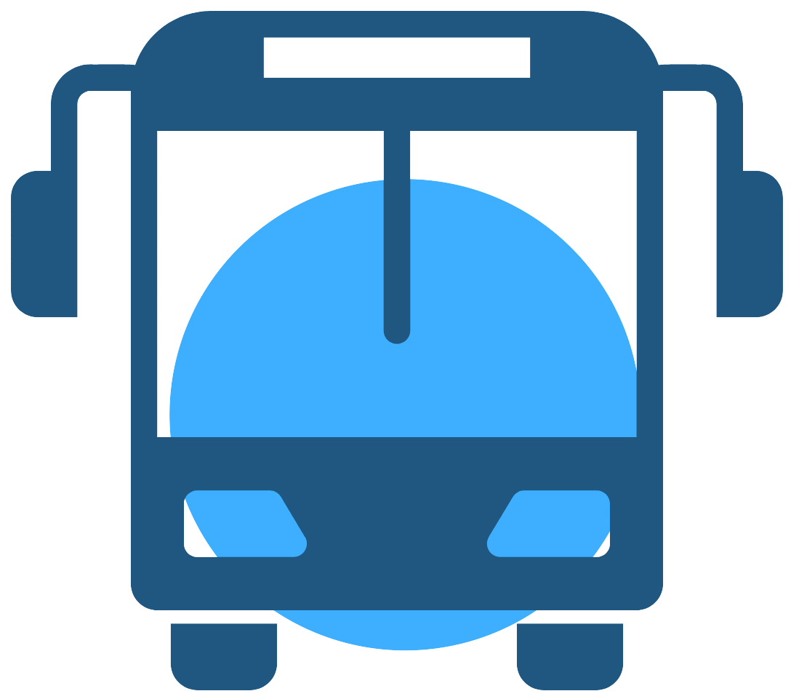
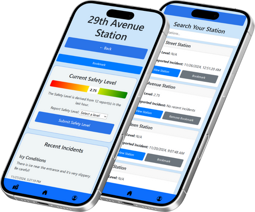

Welcome to TransitAura, a project aimed at making Vancouver safer for its residents. Using our easy-to-navigate interface, users can view and report useful information about their transit stations and routes in Metro Vancouver.
· View and report how safe you feel using Safety Level ·
· View and report experiences using Incidents ·
NEW: View your Station on the Map page!
